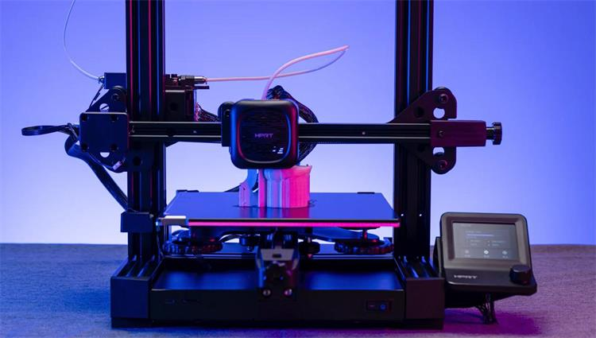
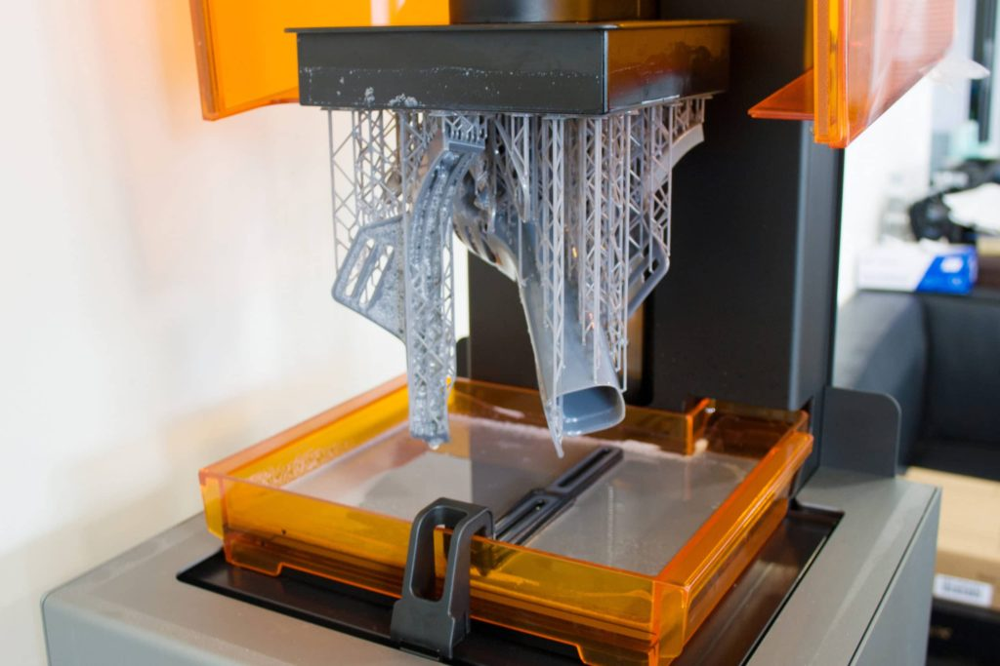
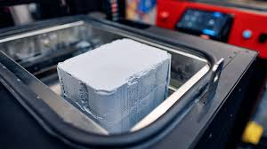
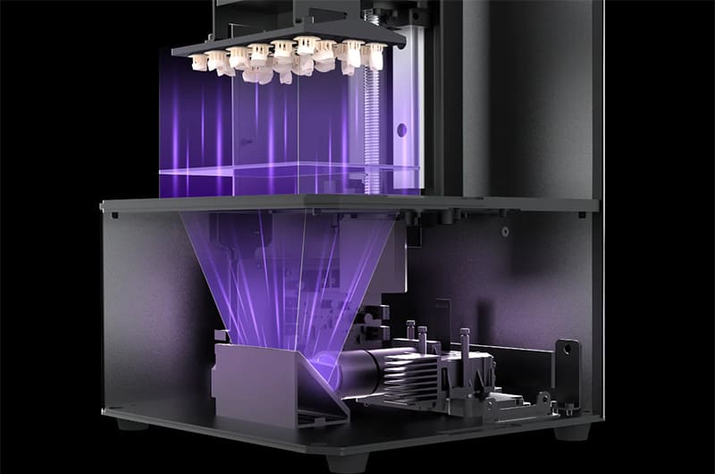
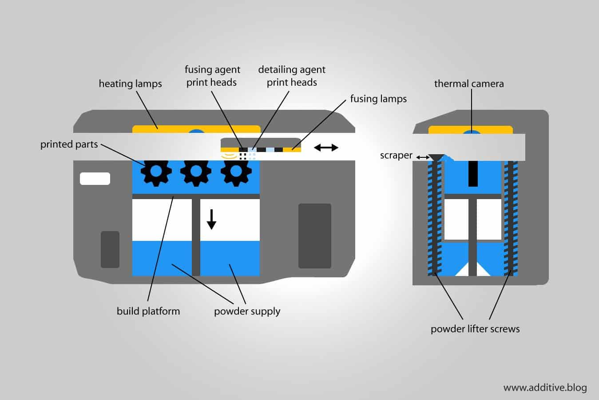
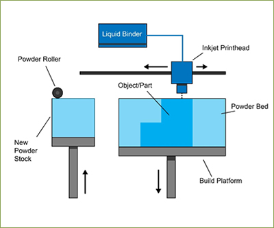

Vannak több fajtái is a 3D nyomtatásnak, amelyek különböző technológiákat alkalmaznak az anyag rétegekben
történő felépítésére:
FDM (Fused Deposition Modeling) – A legelterjedtebb eljárás, ahol egy olvasztott műanyag szálat (pl. PLA, ABS,
PETG) extrudálnak és rétegenként építenek fel.

SLA (Stereolithography) – Folyékony gyantát keményít meg egy UV-lézer, így nagy felbontású és részletgazdag
nyomatokat eredményez.

SLS (Selective Laser Sintering) – Porállagú anyagot (például nylonport) olvaszt össze lézerrel, így tartós és
összetett szerkezetű alkatrészeket lehet nyomtatni.

DLP (Digital Ligst Processing) – Az SLA-hoz hasonló, de itt egy digitális projektor vetít UV-fényt a gyantára,
így egy egész réteg egyszerre keményedik meg.

MJF (Multi Jet Fusion) – Egy tintasugaras technológia, amely hőérzékeny porra viszi fel a kötőanyagot, majd
hőkezeléssel hozza létre a végső formát.

Binder Jetting – Színes vagy fém alapú nyomtatásra is alkalmas technológia, ahol egy kötőanyag rétegenként
rögzíti a port, majd utókezeléssel erősítik meg az objektumot.

Ezeket a technológiákat az ipar, a prototípusgyártás, az orvostudomány és a hobbi 3D nyomtatás területén
egyaránt alkalmazzák.